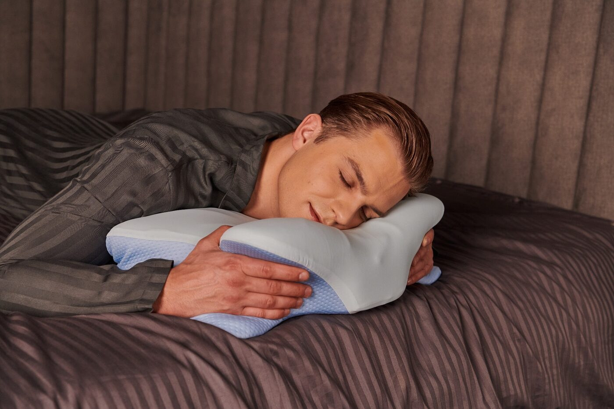

The Sleep & Posture Report
Is Your Pillow Quietly Wrecking Your Neck? Why Millions of Sleepers Are Switching to an Ergonomic Design

You go to bed tired. You wake up tired. And somewhere in between, your neck picks up a fresh knot that follows you around all day.
If that sounds familiar, you're far from alone. Neck pain is one of the most common musculoskeletal complaints in adults, and sleep posture is one of the things researchers keep pointing back to1.
Here's the uncomfortable truth: the pillow you sleep on every night may be part of the problem.
Your head weighs roughly as much as a bowling ball. For around eight hours a night, your pillow decides whether that weight sits in line with your spine — or bends your neck forward, backward or sideways the whole time.
A flat, worn-out or overstuffed pillow can leave the muscles that connect your neck and shoulders working when they should be resting. That's why so many people notice:
- Stiffness that's worst first thing in the morning
- Tension headaches that start at the base of the skull
- Sleep that doesn't feel refreshing
- Massages and stretches that only help for a day or two
Why the Wrong Pillow Keeps the Cycle Going
Think about it: you would never stand with your head tilted to one side for eight hours. But a pillow that's the wrong height or shape can hold you in exactly that kind of position, night after night.
First the neck muscles tighten. Then the tension spreads into the shoulders. By morning, it can feel like your whole upper back is locked up.
And because you go right back to the same pillow the next night, the reset never really happens. Treatments help you feel better during the day — but the pillow undoes part of that work every night.
The Hidden Cost of "Just Living With It"
When neck pain becomes a regular thing, so do the bills. Massages, physio sessions and chiropractic visits add up quickly:
WHAT ONGOING TREATMENTS CAN COST:
- One massage or adjustment: typically €50–120
- Once every two weeks: €1,300–3,100 a year
- Over ten years: well into five figures
Those treatments can genuinely help. But if your pillow is part of the cause, it makes sense to fix that first — it's a one-time change that works for you every single night.
Meet : The Pillow Designed Around Your Neck

Instead of a flat rectangle, uses a contoured memory foam shape built around one goal: keeping your head, neck and spine lined up while you sleep.
Yes, it looks different. That's the point. Every curve is there to support a specific part of your neck and shoulders.
How It Supports Every Sleeping Position
Back sleepers: the raised neck contour fills the natural curve of your neck, so your head isn't pushed forward or left hanging.
Side sleepers: the higher side edge fills the gap between your shoulder and ear, helping to keep your spine straight instead of bending.
Stomach sleepers: the lower centre lets your head rest with less upward twist on the neck.
What Makes It Different
- Memory foam that adapts to the shape of your head and neck and spreads the weight evenly
- Ergonomic contour designed to keep your neck in a neutral position
- Shoulder cut-outs so side sleepers aren't pushed out of alignment
- Breathable, removable cover that's easy to wash
What to Expect in the First Few Weeks
Switching to an ergonomic pillow is a change for your body, and most people need a short adjustment period. Here's what a typical transition looks like:
Nights 1–3: Getting Used to It
The shape feels unfamiliar at first. Your body is learning a new, more neutral sleeping position — give it a few nights before judging.
Week 1–2: Settling In
Many sleepers find the contour starts to feel natural, and they notice they're waking up less stiff.
Week 3 and Beyond: The New Normal
Once your body has adapted, a well-supported neck becomes just how you sleep. That's when people tend to say they can't go back to a regular pillow.
Everyone is different. If you have a medical condition or persistent pain, talk to your doctor or physiotherapist — a better pillow is a support, not a replacement for medical care.
[IMPORTANT UPDATE]: is currently running a promotion on its official website. Readers who click the button below can check whether the offer is still available.
⚡ NOTE: Promotions and stock levels change, so the price you see today may not be available later.
What Are Other People Saying About ?

offers a day return period
You don't have to take our word for it. If it isn't right for you, you can send it back within days under the seller's return policy.
Think about it: a single massage costs around €60. A chiropractor visit? Often more. Do that regularly and it adds up to thousands a year.
Meanwhile, is a one-time purchase that works for you every night.
The difference? Treatments ease the pain after it shows up. A supportive pillow tackles one of the reasons it shows up in the first place — the position your neck spends a third of its life in.
Your neck spends around a third of its life on a pillow. If you wake up stiff, sore or tired, it's worth making sure that pillow is working for you — not against you.
ORDER NOW!1https://www.ncbi.nlm.nih.gov/pmc/articles/PMC8631621/
2https://www.ncbi.nlm.nih.gov/pmc/articles/PMC9764600/
This is an advertisement and not an actual news article, blog, or consumer protection update.
AFFILIATE DISCLOSURE: This website contains affiliate links. If you buy through them, the owner of this site may receive a commission at no extra cost to you.
ADVERTISING DISCLOSURE: This website is an advertisement and not a news publication. Any photographs of persons used on this site are models. Product claims are those of the manufacturer. This content is not medical advice.